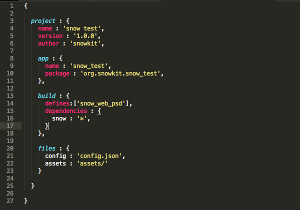

About
flow is a project based build tool for the haxe programming language.
It is free and open source.

Haxe is an expressive, beautiful modern programming language
that compiles it’s own code into other languages. learn more
Alpha
Please note
flow is currently considered alpha, which means there may be bugs, inconsistencies, incomplete implementations, and possible minor usage/project changes. It is still considered fairly stable and is being used by multiple frameworks and games, but there are things to tighten up before 1.0.0 release can be called final.
Join us in developing and testing the framework and tools, below.
What does it do?
brief overview
flow is a project based build tool, meaning that it takes a flow file,
and executes the commands and tasks in the flow file to build an application.
An example of some of the available commands :
files- copies and templates files from your project to the buildicons- copies, converts and embeds icons for a buildpackage- creates a zip or tar archive from a buildrun- builds, copies files, icons, runs hooks and launches the application
For a full list, see the usage guide.
Example flow file
A flow file is a project. It is a simple, not-strict json file.
Where does flow fit in?
To understand where flow fits, you should understand the way haxe works it’s magic.A target and a platform are not the same thing.
The haxe compiler transforms code from the haxe language, into another target language.
haxe -> javascript
haxe -> c++
It’s important to know the difference, using the js target as an example.
The javascript language, is the target.
There is no single platform associated with js, it can run in the browser, on the server, in a standalone executable on desktop or mobile. The most common platform is the web.
The web, is a platform.
Building an application
The code that haxe generates is 100% ready to use, in a webpage or an application,
haxe has done it’s job now and it’s your turn.
You need to put all this together, maybe in an html file or an app bundle, maybe package an apk for android, add some assets, an icon and make this work over a few platforms.
What if you want to run a script automatically before building?
What if you want to package nightly builds of your application for testers?
This is what flow is for
flow takes the haxe output, your project input, and creates shippable applications,
games, websites or more on it’s supported platforms.
flow has many built in tools, from javascript minify to interacting with the cpp build pipeline - it’s an expressive tool designed around flexibility and control.
Supported Platforms
A list of the supported platforms :


web- js (.js)mac- c++ (.app)windows- c++ (.exe)linux- c++ (binary)android- c++ (.apk)ios- c++ (.xcodeproj)
Guide
Setup guide
flow is setup through haxelib,
from a terminal (need help?)
by running the following command :
haxelib install flow

followed by
haxelib run flow setup
This opens a simple web interface get you setup.
btw
- on windows cmder is an excellent alternative to cmd.exe garbage
- on mac/linux fish is also a really nice shell
Usage
The usage guide is accessed in full from the cli,
simply run flow without arguments, or flow usage
for basic use
flow build <target> [--debug]flow run <target> [--debug]flow clean <target>flow package <target>
If target is not specified, it will use your current system i.e
flow build on a mac will result in flow build mac --arch 64
Editor support
Where possible, full code completion and building from the editor is supplied.
Sublime Text (mac/windows/linux)

FlashDevelop (windows only)
template is in setup/, but here is a Download link

Features
icons- embeds and converts icons for all targets (except linux)package- zip or tar your builds quicklyhooks- pre and post hooks (runs a node.js script)clean- delete build and project output separately, or togetherupx- for desktop platforms, final binary can be auto compressedfiles- flexible copy and templating systembuild- take haxe code, and generate a deployable applaunch- run the app, with file sync, internal web server and more
flow guides
flow files - the project format
pipeline - what flow does exactly
platforms - all the gory details
design - how flow fits together
contribute - discuss, build, test
Projects using flow
luxe engine - a high level game engine for haxe to build apps or games
snow - a minimal low level toolkit for building frameworks
Technology
flow is built using node.js

Things like flow
aether is a long standing haxe build tool (a.k.a lime-tools), used by OpenFL.
feedback
All trademarks and registered trademarks are the property of their respective owners.